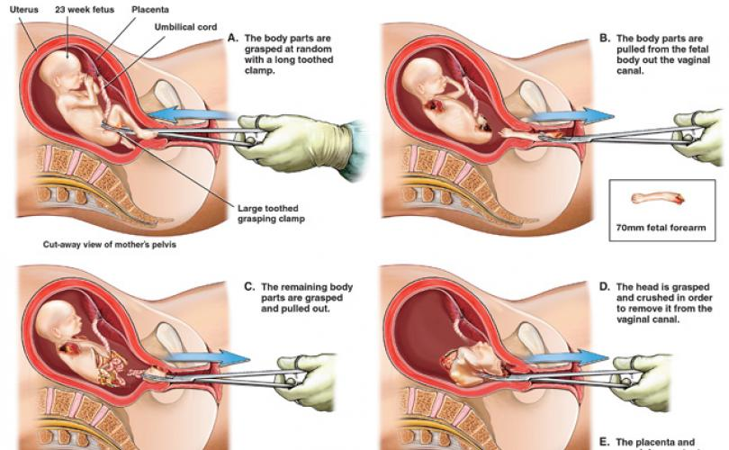

Pregnancy and Miscarriage
SYMPTOMS
- A miscarriage is the loss of a fetus before the 20th week of pregnancy. The medical term for a miscarriage is spontaneous abortion, but "spontaneous" is the key word here because the condition is not an abortion in the common definition of the term.
- According to the March of Dimes, as many as 50% of all pregnancies end in miscarriage -- most often before a woman misses a menstrual period or even knows she is pregnant. About 15-25% of recognized pregnancies will end in a miscarriage.
- Bleeding which progresses from light to heavy
- Severe cramps
- Abdominal pain
- Worsening or severe back pain
- Fever with any of the symptoms listed above
- Infection Hormone problems
- Immune system responses
- Physical problems in the mother
- Uterine abnormalities
- Is over age 35
- Has certain diseases, such as diabetes or thyroid problems
- Has had three or more miscarriages
What is Pregnancy and Miscarriage?
